方案總綱：錦和閱世，JINHE, YES! 翻轉四大困境
Yield the Heart【閱己・心靈開門】➔ 破除「情緒無出口、流水帳」
從《ORID 閱讀護照》四層次提問到《安妮新聞》SEL 青春濃霧展，讓閱讀成為安頓青春焦慮的避風港！
Empower with Tech【閱智・數位賦能】➔ 破除「滑世代怕長文」
導入臺師大 SR 適性診斷、因材網 E度 AI 古文助教、AI 提示詞明信片與16週讀報出題官，鍛鍊高階推論力！
Step into Society【閱世・永續公民】➔ 破除「學科孤島與隔閡」
串聯自然科綠能大富翁、山海獵人原民桌遊、巴拉圭使節開箱與美國 CSULB 大稻埕雙語走讀！
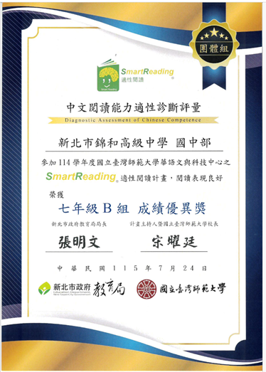
🏆 新北市國中組最高榮譽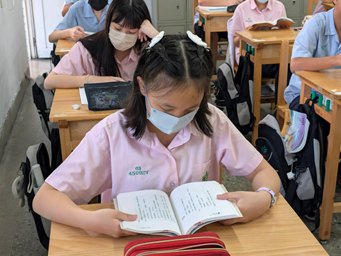
🌅 晨讀扎根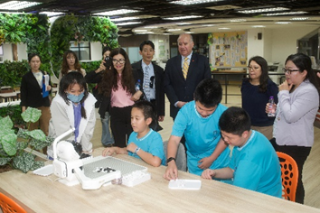
🌍 國際閱世團隊與空間：跨科寫入領域計畫 × 有溫度的「錦堡」
拒絕單打獨鬥！跨科共備「正式寫入領域教學計畫」
校長領航行政教學鐵三角，閱推與國文、視藝、表藝、自然、資訊敏捷共備，每學期逾 1/3 週次常態實施，不因人事異動中斷！
把圖書館變成「錦堡樂園」：閱讀扭蛋機 × 動態影音推播
設置下課排隊神器「實體閱讀扭蛋機」、溫暖沙發「SEL 心理安頓專區」，每檔書展自製 1～3 分鐘動態短片全校聯播！
每週 10 班制家長志工隊 × 學生小志工團 × 線上 RPG 導覽
家長志工擔任闖關關主與特教伴讀；小志工中午常駐調度20～30箱班級共讀書箱；新生 100% 體驗自製線上 RPG 利用教育遊戲！
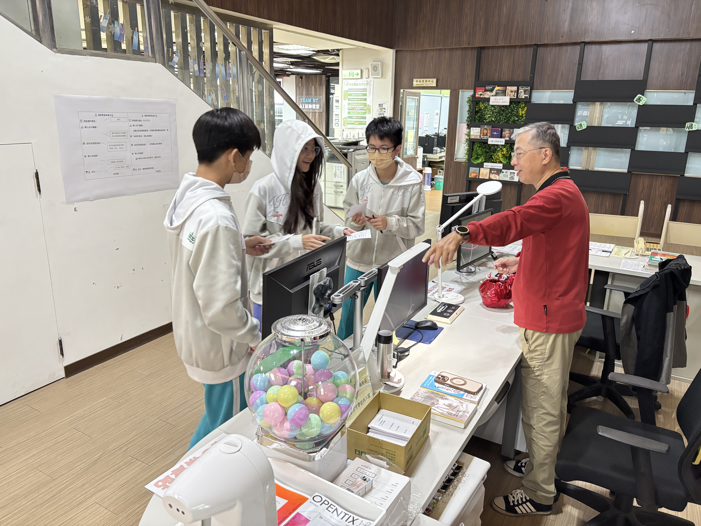
🎰 錦堡人氣王：閱讀扭蛋機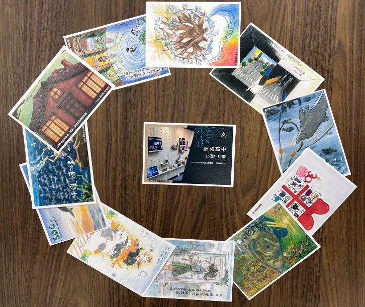
🎬 月月主題書展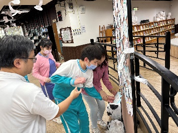
💝 全納平權共融校本自編教材：《國文小尖兵》4冊 × 《ORID閱讀護照》
自主研發《國文小尖兵》四冊螺旋式晨讀教材
依認知發展編纂：七上(論孟古詩) ➔ 七下(唐宋詩) ➔ 八上(世說新語) ➔ 八下(古典筆記小說)，奠定文言與長文閱讀底蘊！
三代改版《新版閱讀護照》：SR 選書攻略 ＋ ORID 思考鷹架
內建 P.6〈SR 選書攻略〉配對適讀好書；以O客觀事實、R感受反應、I意義詮釋、D決定行動四層次提問，終結抄大意流水帳！
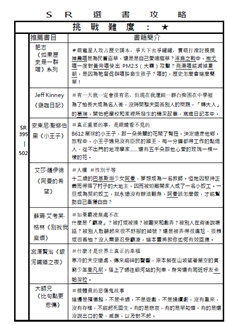
📘 100% 教師自編校本教材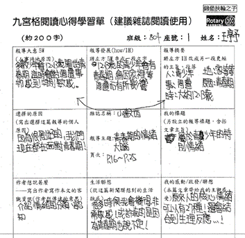
✍️ ORID 深度反思原件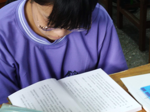
📦 班級共讀書箱主軸 Y 閱己：SEL 青春濃霧展 × 在混亂中畫下希望之星 ⭐
《安妮新聞》青春濃霧展：繪製「我的人生天氣圖」
陳恬伶老師結合《安妮新聞》美感報紙，引導國中生覺察內在情緒天氣（濃霧、暴風雨、多雲、晴天），讓隱微的壓力被溫柔看見。
手撕報紙拼貼〈我的混亂地圖〉➔ 中央畫下「希望之星」
學生親手將報紙撕碎拼貼出內心的混亂風暴，並在畫面中央畫下一顆代表希望與方向的星星⭐，寫下：「在混亂中看見可能性！」
10月 SEL 好書動態推播 × 聖誕感恩快遞 × 教師節快閃
自製〈11410月 SEL 好書推薦〉短片（「你最近有點累嗎？」），結合明信片感恩快遞，將自我療癒擴展為溫暖他人的行動！
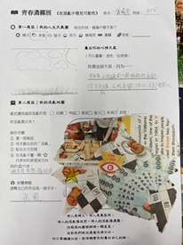
⭐ 學生真實手寫原件：撕報紙畫希望之星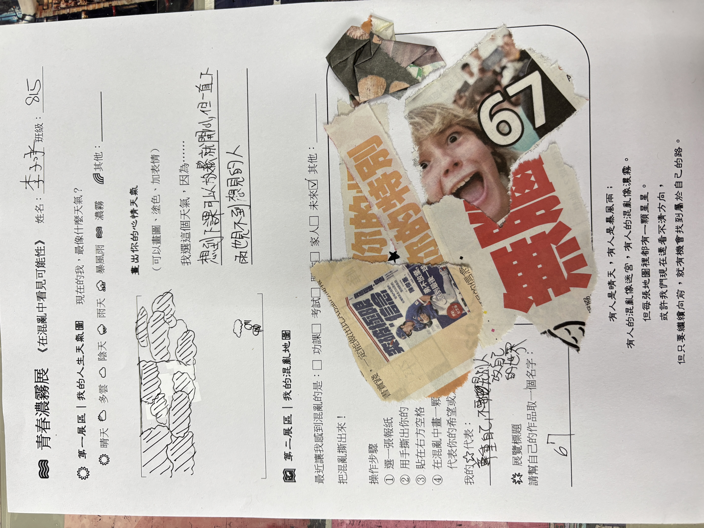
💖 SEL 課堂實作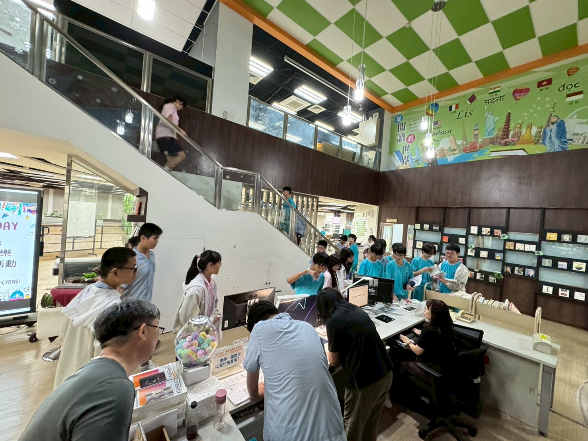
💌 感恩快遞行動跨模態美感轉譯：手繪水彩 × AI 提示詞「閱讀明信片」
手繪美學組：提煉書籍核心金句 × 色彩心理學構圖
70203 陳以恩榮獲特優；70106 王彥呈（體育班）更以細膩筆觸榮獲優等，證明在錦和連運動健將都能綻放深刻的文學與藝術光芒！
AI 數位創作組：把抽象文學意境轉化為精準 Prompt！
• 70313 朱鴹叡 (優等)：下達「清晨第一束光透過丁達爾效應照亮少年，黑白漸層象徵救贖」提示詞！
• 70503 林言恩 (優等)：設定「馬卡龍水彩、賓士貓 Mo 踏入森林尋光」意象！
從課堂作品到校園文創：印製實體明信片愛心義賣
累計超過 80 件參賽與 21 件獲獎傑作，全數附上完整「創作理念說明」，更印製成實體明信片於校慶公益義賣！
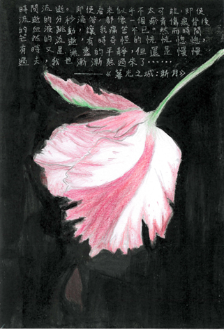
🏆 手繪組特優｜70203 陳以恩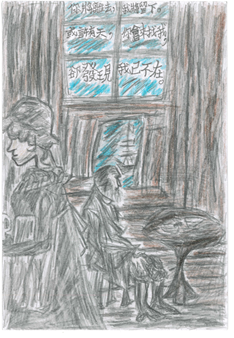
🥇 手繪組優等｜70106 王彥呈(體育班)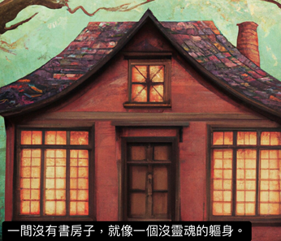
🤖 AI 組優等｜70313 丁達爾效應光影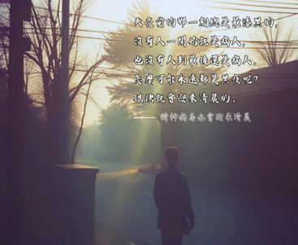
🤖 AI 組優等｜70503 賓士貓森林尋光主軸 E 閱智：連續三年公開授課 × 因材網「E度 AI」協作
七年級〈遇見一株樹：數位眼×詩人心〉平板觀察與新詩
學生手持平板走入校園微距拍攝樹木光影，結合五感曼陀羅思考法與 AI 意象切磋，將自然觀察化為動人現代詩！
八年級〈古典筆記小說〉× 因材網「E度 AI 助教」破難詞
閱讀《國文小尖兵》〈定伯賣鬼〉〈代郡雞妖〉時，學生向因材網生成式 AI「E度」提問釋義，再以「情節故事山」拆解並改寫現代劇本！
連續三年辦理閱讀公開授課（113・114・115）促成典範轉移
陳恬伶老師等閱推團隊開放課堂，領域教師入班觀議課，將「AI 協作＋故事山結構拆解」擴散為全校共享教學模組！
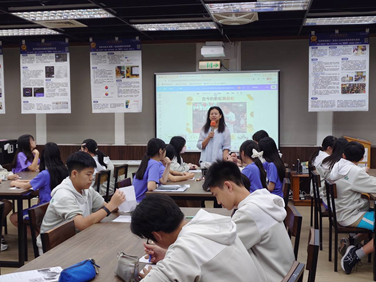
👩🏫 113～115 連續三年典範公開授課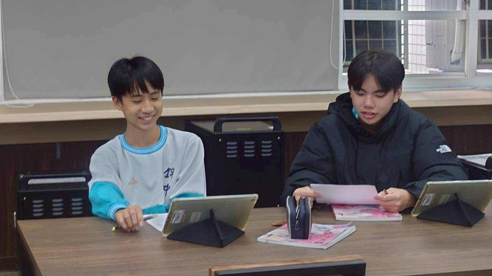
💻 114 數位教學公開課思辨與展演：16週讀報三部曲 × 八年級小小說書人
《好讀周報》16 週三部曲：從被動看報升格為「出題官」！
① 10月初聯合報專家講座（導師隨班共學讀報筆記力）➔ ② 圖書股長培力＋各班輪值設計誘答題 ➔ ③ 跨班連線 Kahoot! 空中 PK 賽！
【國文×表藝】八年級小小說書人：3分鐘演活萬字長篇小說
小組共讀《被討厭的勇氣》《查理與巧克力工廠》《吹夢巨人》《詩魂》，以情節故事山拆解主角衝突，改編為舞台展演與微電影！
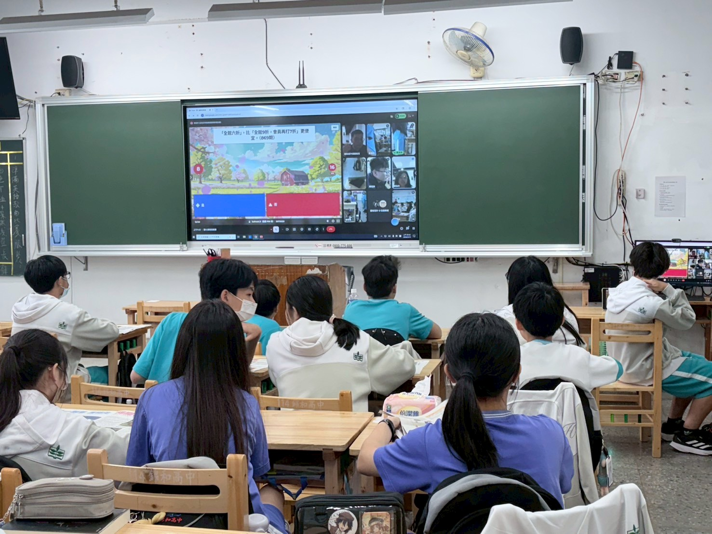
🏆 三部曲壓軸：跨班雲端 PK 讀報挑戰賽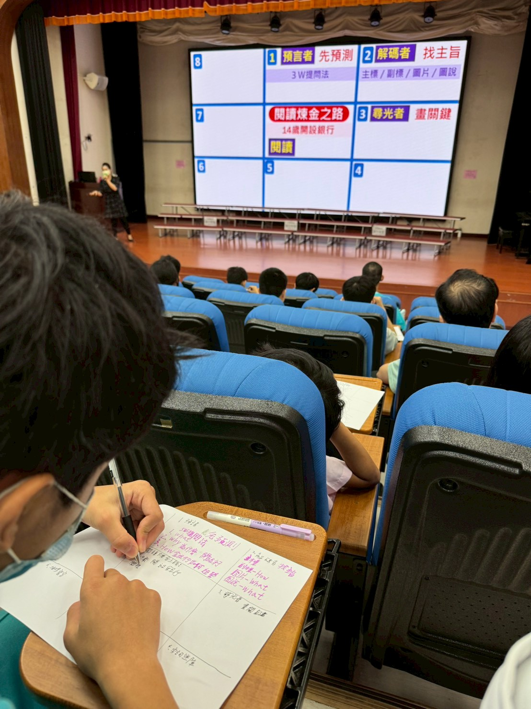
📝 首部曲：專家讀報講座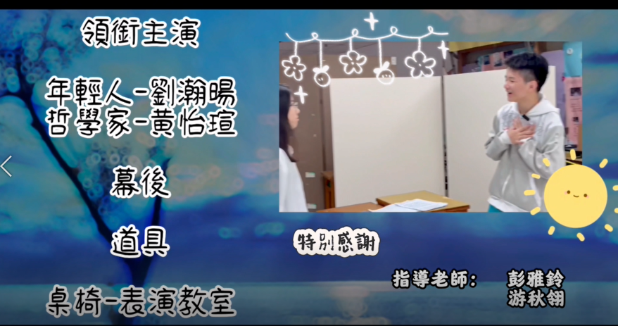
🎭 國文×表藝：小小說書人主軸 S 閱世：自然科綠能桌遊 × 萬聖節查核 × 減塑雕塑
【自然×圖資 SDGs 7】國七「能源好好玩」入館檢索＆綠能大富翁
自然科教師帶隊入館檢索太陽能、風力、地熱文獻，學生不僅上台簡報，更自主設計出實體卡牌桌遊《綠能大富翁》！
【當科學遇見萬聖節】20 則電力異常怪談 × 物理原理破案
走廊燈光閃爍、書頁無風自動？學生必須入館查核低頻聲波共振、靜電感應、電磁感應等自然科原理，撰寫科學破案故事接龍！
【視藝×閱讀 SDGs 12】《安妮新聞》〈吸管的進化〉36組紙膜雕塑
精讀台灣限塑政策演進文本，收集廢報紙、寶特瓶與舊吸管進行多視角立體創作，完成36 組「變廢為寶環保紙膜雕塑」！
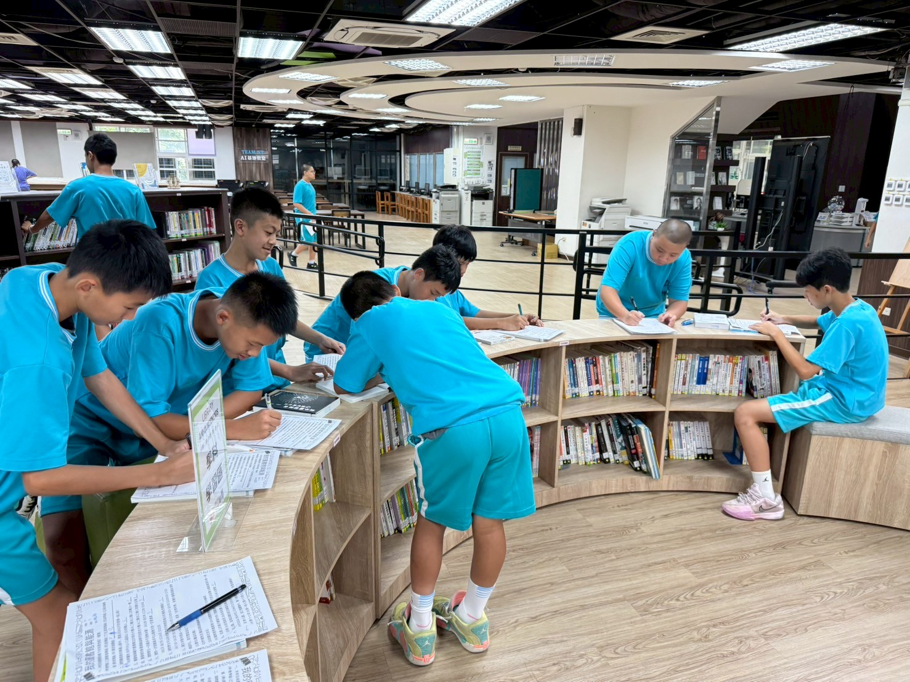
🔋 自然科 × 圖書館利用教育 (SDGs 7)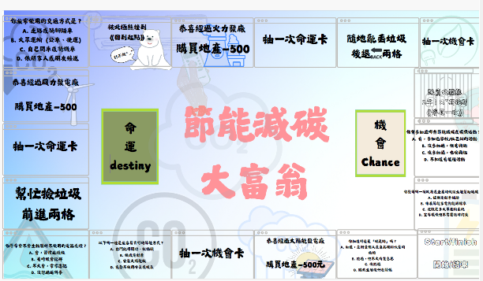
🎲 學生自製《綠能大富翁》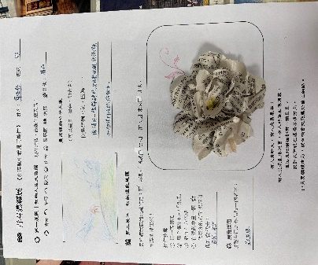
♻️ 36組減塑紙膜雕塑 (SDGs 12)多元與國際：山海獵人原民大富翁 × 巴拉圭＆美國雙語走讀
世界閱讀日「山海獵人三關試煉」➔ 書展借閱率飆升 +40%！
結合原民常識問答、封面圖騰檢索（祖靈之眼、飛魚、白鹿）與獵書行動；閱推教師更親自撰寫程式碼開發 HTML5《台灣原住民文化大富翁》配樂網頁遊戲！
【使節開箱】巴拉圭大使蒞校 ＆ 圖書館 5 大海報雙語尋寶
發揮完中優勢將國際資源引入國中部！圖書館自製巴拉圭地理、瑪黛茶、雙面國旗海報，學生完成尋寶單並以瓜拉尼語跟大使熱情互動！
接待美國加州州立大學 (CSULB) 大稻埕中英雙語走讀
結合自編《1150702-大稻埕走讀手冊》，帶領學子踏查霞海城隍廟、李臨秋故居，以全英語向美國大學生導覽台灣在地文化！
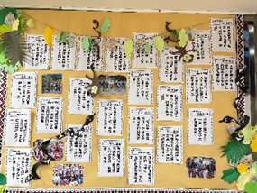
🏹 世界閱讀日：山海獵人三關試煉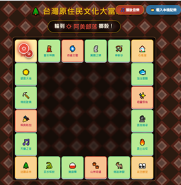
🕹️ 教師自製 HTML5《原民音樂大富翁》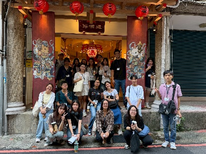
🇺🇸 接待美國 CSULB 大稻埕雙語走讀亮眼實證與外溢：全市 SR 最高進步獎 × 扶輪之子共伴
科學數據鐵證：勇奪 115 新北市國中組【SR 最高進步獎】
臺師大 SR / DACC 前後測常模追蹤：八年級在最高階「推論分析」與「詮釋整合」平均 PR 值躍升逾 15%，徹底突破長文閱讀痛點！
專業反向輸出社區：首創「扶輪之子月月讀」公益共伴
本校研發之〈ORID 閱讀學習單〉獲在地扶輪社高度肯定，指定為扶輪之子每月請領獎學金之必修成長指標，化單向資助為心靈賦能！
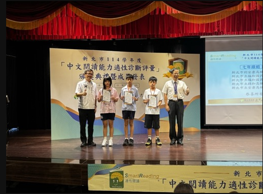
🏆 115年新北市 SR / DACC 最佳進步獎頒獎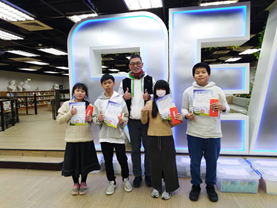
🏅 錦堡鑽石閱讀獎表揚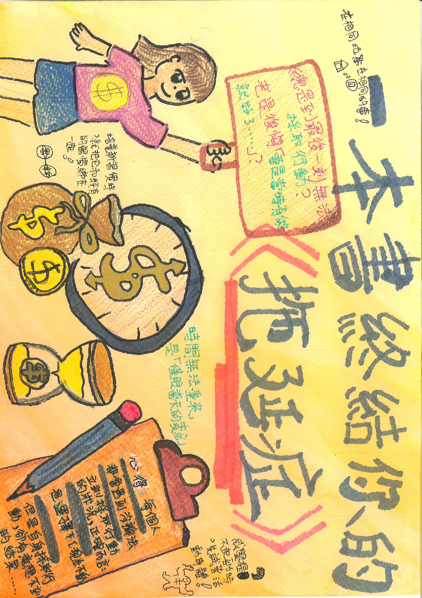
🖼️ 84+ 件暑期閱讀海報展